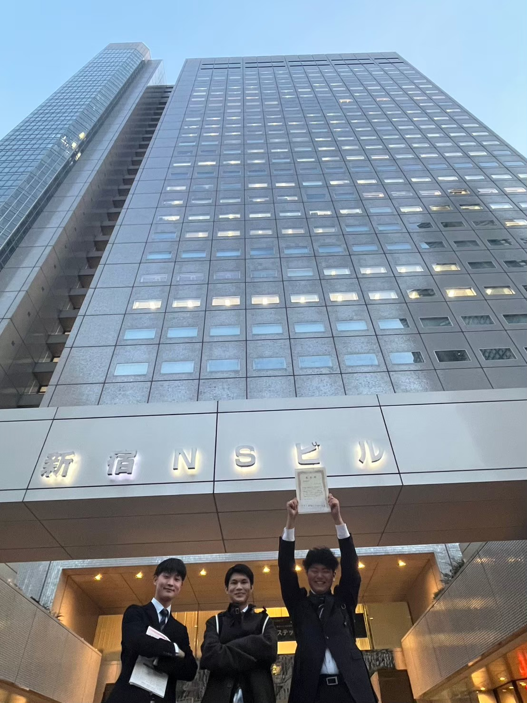

お知らせ
令和6年度 学生ボランティア活動体験レポート募集事業 優秀レポートに採択されました
そよかぜによる活動体験レポートが、「令和6年度学生ボランティア活動体験レポート募集事業」において
優秀レポートとして採択されました。
日頃より活動を応援してくださっている皆さまのおかげです。心より感謝申し上げます。
レポートで伝えたこと
能登や東北との「つながり」を大切にしながら、防災・地域の魅力発信・学びの場づくりなど、 そよかぜが行ってきた活動をまとめました。
- 活動では 現地に行くこと・地域の魅力を味わうこと・子どもを真ん中にすること を大切にしている
- 大川小学校・能登町での活動を通して、地域の文化・人の温かさ・子どもたちの創造性に触れた
- 支援ではなく、共に未来をつくる仲間としての関係づくりを目指している
- 「ただいま」と思える場所づくりがそよかぜのミッション
今回の評価を受けて
今回の採択を励みに、「ただいま」と思える場所づくりや、防災・復興への関心が自然と高まる活動を
引き続き進めていきます。
今後もホームページやマップ等を通じ、活動内容を分かりやすく発信していきます。

表彰された当日に撮った写真
レポートを書いた代表者への感想はこちら
soyokaze.takeuti@.com